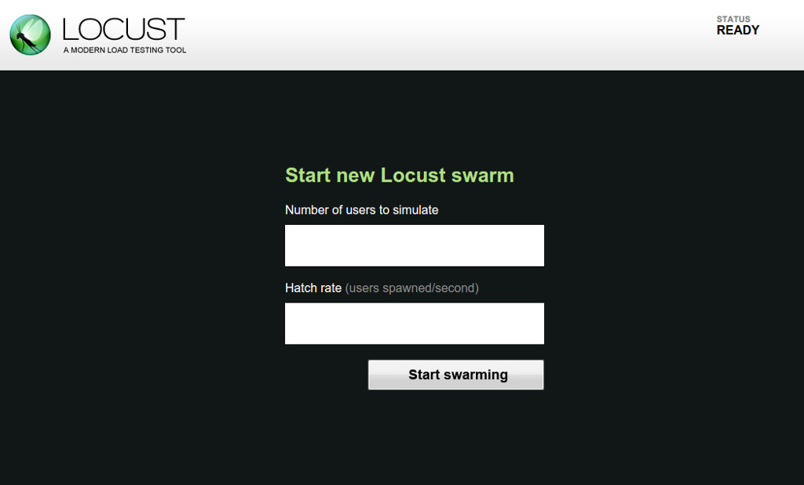

In my search for a scalable, session based, highly configurable load testing tool, I happened upon Locust. Looking for something between the lightweight but pure throughput testing of ab and full on virtual machine scripted browser transactions. Locust looked to fit the bill, and so far has done everything I have needed, both for quasi-functional testing as well as benchmarking API endpoints. A great departure from the normal heavyweight The Grinder, Locust provided a lightweight, yet totally functional approach to user emulation testing.
Locust is a lightweight framework designed to allow script-able application interactions be scripted simulating the burstiness of an end user. Once the base set of tasks is defined, locust allows it to be scaled out to an arbitrary number of users, all acting independently with their own session data. Locust also makes running in a distributed master/worker fashion simple with a few configuration tweaks.
Installation
Installing locust is absurdly simple, in a virtual env, pip install
locustio. Pip will pull in all the requirements and you are off to
the races.
Getting Started
Locust is fairly straight forward to use, import the needed classes, write
a HttpLocust class and at least one task, then run your project with
locust -f . This will launch your task definitions as
well as Locust's internal flask engine for controlling the test and
displaying both the live results and providing access to csv downloads.
See the example components below:
HttpLocust class:
class WebsiteUser(HttpLocust):
host = "https://api.example.com"
task_set = WebsiteTasks
min_wait = 1000 # time in ms
max_wait = 15000 # time in ms
The above declares a new class that will inherit the HttpLocust, which
fulfils one of the two requirements of locust: your file must be valid
python, and must have at least on class that inherits from
Locust. The HttpLocust class includes some additional helpers
to simplify http requests and session management. In our example class we
define the target host that all the request URLs will be built from, the
TaskSet class we want this Locust to execute, and the delay window we want
each task to be executed in. As Locust tries to emulate user behavior, it
will pause each individual 'User' between min_wait and max_wait ms, to
simulate the time between normal user actions.
Each of these HttpLocust classes will keep track of the web clients state, including cookies, to better emulate an end-user's browser.
After getting the session class, we need to define some tasks and their
TaskSet:
class WebsiteTasks(TaskSet):
@task(10)
def index(self):
self.client.get("/")
@task(5)
def about(self):
self.client.get("/about")
@task(1)
def contact_us(self):
self.client.post("/contact_us", {
"email": "customer@example.com",
"subject": "Sales inquiry",
"message": "I am very interested in your product...",
})
The above defines three separate tasks index,
about, and contact_us, which perform a GET on /
and /about, and a POST to /contact_us, respectively. In
contact_us, the POST data is built from the dictionary passed
as the second argument. Each of these tasks will be executed in a random
order, with a delay of min_wait..max_wait between the beginning of each
task. The decorator task performs the magic needed for the following
function to be executed by locust as a discrete task.
The integer passed to @task() is the weight of the task. In
this case, we have a weight of 10 for index, 5 for
about, and 1 for contact_us, thus
index will get executed 10x more often than
contact_us,
and twice as often as about. You can easily see how locust will
distribute requests by running locust -f
Example:
Task ratio per locust class
--------------------------------------------------------------------------------
100.0 WebsiteUser
62.5 index
31.2 about
6.2 contact_us
Total task ratio
--------------------------------------------------------------------------------
100.0 WebsiteUser
62.5 index
31.2 about
6.2 contact_us
Note that while each of these example functions only has a single
self.client call, you can perform multiple requests in each task. This
allows for proper setup of a form, such as grabbing the token out of a
hidden form field for inclusion in the client.post call you actually
want to test.
Now that we have a few basic tasks defined and configured, we can run locust directly, using ``locust -f locust_example.py``. This will launch locust with our definition file, as well as start a web interface on localhost:8089. After connecting to http://localhost:8089/ you will be presented with the following prompt:
{kind=link}
Here we specify how many total users we would like, and the rate at which
to spawn them. The rate is user specified to avoid situations where 100
sudden new users would cause issues with caching/scaling/etc. Once you
click start swarming, Locust will begin running your HttpLocust users,
spawning them at the hatch rate, up until reaching the number specified for
total users.
Once the hatch rate is reached you will be presented with a display of the current status, showing each task that has been run and its various statistics. This display will be updated periodically while the tests run.

Once all required user sessions have spawned and completed their startup tasks, Locust conveniently restarts statistic collection to get an accurate picture of the desired load.
One Step Further
Since the file is written in python, you can have any number of functions that are not wrapped with a @task that you can call from within tasks, for instance to test our auto-complete suggestion API, I load a word list as a global dictionary from disk, then in any auto-complete request I grab a random word, return a chunk of the word from the third character to a random position > 3 and use that as the GET parameter.
Example:
import random
with open('words.txt', 'r') as temp_file:
words = [line.rstrip('\n') for line in temp_file]
@task()
def search(self):
word = words[random.randint(0,len(words)-1)]
length = random.randint(3,len(word))
self.client.get("/search?search=%s" % word[0:length], name="/search?search=[string]")
In this example, we are substituting the word with the requested length in
the query string, and then via the name kwarg we are telling locust how to
group requests. As this method will generate a large number of unique
requests (by design) I don't want the output polluted by 1000s of requests
for /search?search=a, /search?search=b, etc. By using the name
kwarg, all requests by this get will be grouped under the entry
/search/?search=[string], with aggregated statistics for all the
queries. This works in this situation, as ideally each search result
should be similar and we don't care about the specifics.
Just Keep Stepping
Since the HttpLocust class is instantiated in each emulated user thread, we
can do certain house keeping tasks in a TaskSet and have those brought
along with the user. The most obviously useful gain from this, outside of
cookie based session continuity, is the ability to run a specific task on
start. This task is ensured to run prior to any others, making it
essential for any log-in or session initialization steps needed. By
defining an on_start function, it will be run automatically at the
initialization of the task set.
on_start example:
class WebsiteTasks(TaskSet):
def on_start(self):
self.client.post("/user/signin", {
"email": "dllama@example.com",
"password": "what!thatsmypasswordtoo",
})
This above snippet will ensure that any tasks run within the
WebsiteTasks taskset will be logged in as dllama@example.com. This
session will be continued for the current worker, carrying cookies
accumulated throughout the session for future requests.
Caring about more than the HTTP status
Locust also exposes a mechanism to ensure that not only is the application responding to responses on the HTTP level, but that the data returned is actually useful. For requests that have an expected, consistent output, checking the returned value is relatively straight forward
In this example, /about is requested, then scanned for the string
"Founded", making the assumption that our about page will contain some
information about when we were founded. If the string is found, the
response is marked successful. If, however, the string is not located, we
mark the response as failed and provide an error message.:
@task
def about(self):
with self.client.get("/about", catch_response=True) as response:
if response.text.find("Founded") > 0: # Text is on the page
response.success()
else:
response.failure("Founded not found in response")Although this is highly rudimentary and probably not the quickest, cleanest or sane way of doing simple testing like this, it will work for simple checks like this, as well as being easily expanded to checking shorter responses, as in API responses.
The response object exposes a number of ways to get at the response, details can be found in the Documentation, but we will go over a few of the more obviously useful.
The following examples will all assume the response object was returned in a task via ``response = self.client.get("/contact_us")``.
Headers:
Using response.headers['Cache-Control'] will allow one to examine the
caching policy the application has responded with for the results of the
call and ensure cache policy compliance. Similarly,
response.headers['Expires'] can be used to check the objects desired
lifetime.
Cookies:
response.cookies will return a dictionary of all cookies present in the
response object. Examples of use cases for this would be checking session
cookies or checking for any custom cookies that should be set by your
application.
Status Code:
responses.status_code will allow you to take action depending on the
current responses status code, for instance if the status is 401, you could
fire a new request that will provide proper authentication.
Closing
So far this short writeup has demonstrated the basics of Locust, from defining tasks, to building a pseudo functional testing framework based on the response values. The next article will cover some more advanced topics, like distributed mode testing, CSRF protect forms, and other topics yet to be realized.